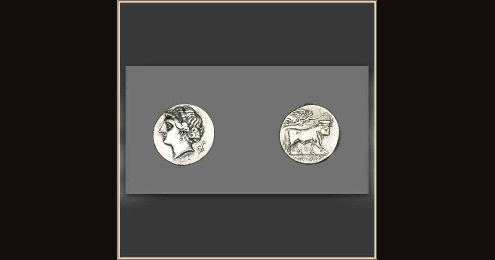

Stater (Coin) Depicting the Siren Parthenope
Greek, minted in Neapolis (now Naples), Italy · 280-241 BCE · The Art Institute of Chicago · Chicago, USA
This little silver coin honors Parthenope, the Siren who — the story goes — threw herself into the sea when her song could not catch Odysseus. Explore its place in Book XII of the Odyssey.